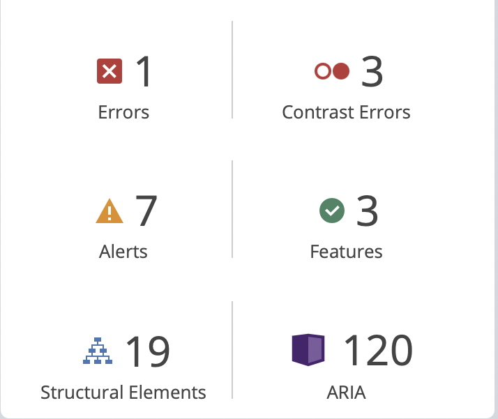
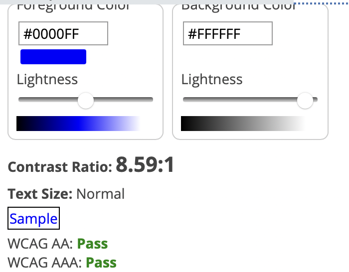
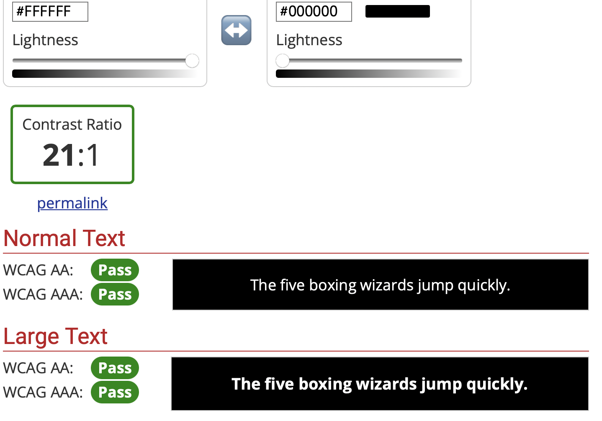
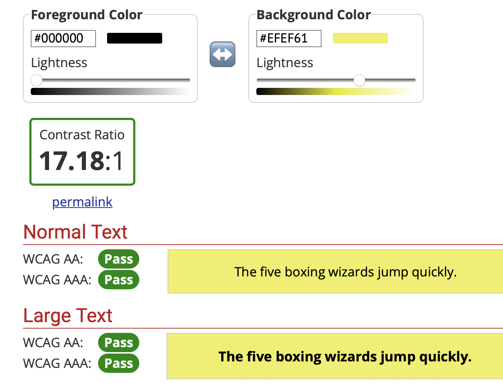
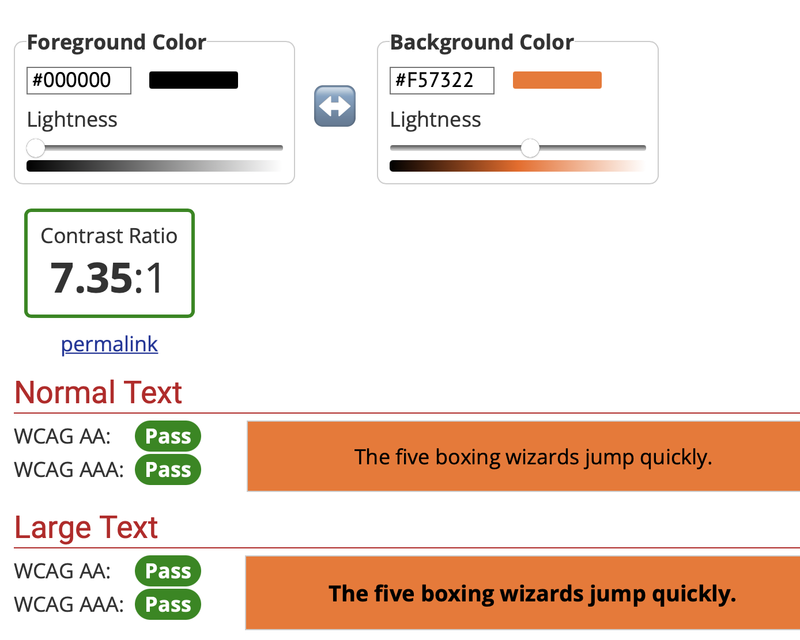
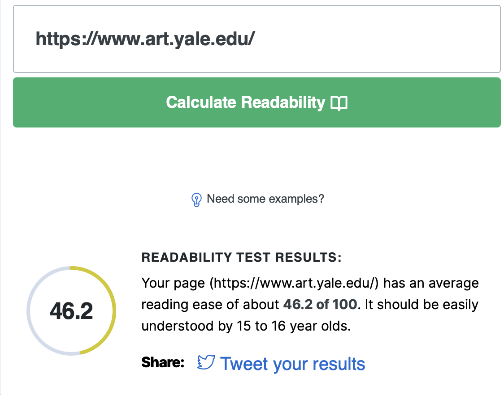
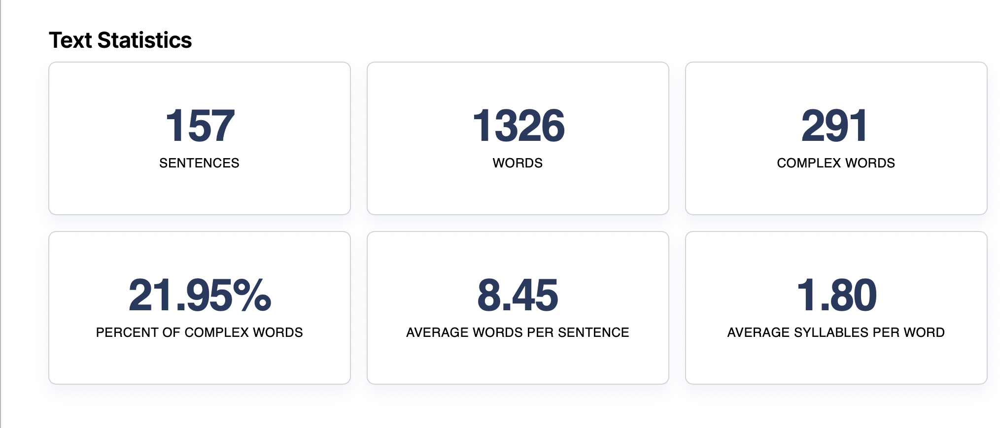
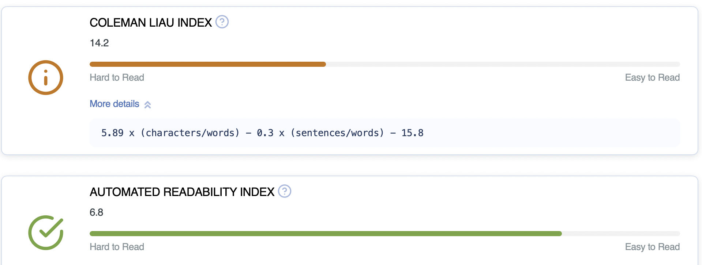

Task 1
For this task I have, again, used the "Yale School of Art website"
Using "Wave Web Accessibility Evaluation tools" I have taken the following screengrabs:

Photo shows a summary of accessibility features on the website.

Photo shows contrast ratio of website.
Using "Web aim contrast checker" I have taken the following screengrabs:
All of the following images display the different colour contrast ratios of the Yale School of Art website.



Using "Web FX readability test" I have taken the following screengrabs:

Image displays readability test results.

The photo shows the text statistics for the Yale School of Art website.

The image shows the test results equated to the US school grade level system.
Task 2
Critical evaluation:
Overall, the Yale School of Art Website is fairly accessible. The colour contrast ratios largely pass WCAG AA and AAA, which is something that is difficult to achieve. This may be because the website does not cater much to aesthetics, which allows for such bold contrasts which might make it easier for those with visual impairments to read in comparison to websites that put a lot of focus into aesthetics and have similar foreground and background colours. However, the lack of aesthetic coordination also may prove to be an accessibility issue as the special effects and overuse of bright colours may be overstimulating for those with cognitive issues, such as anxiety and ADHD. Textually, as the screengrabs highlight, the website can easily be understood from ages fifteen and over which highlights the fact that there are not many over complicated words, phrases, etc that would prove to be an accessibility issue for some, especially for people with issues like dyslexia.
Reflective accessibility statement:
My website aims to be as accessible as possible. Images within my website are accompanies by textual descriptions, as is audio. This is to make it easier for those who possibly suffer from a range of issues like visual impairments, hearing impairments and cognitive issues. However, I do recognise that some use of colour does not provide enough of a contrast to be fully accessible for everyone, which is something I hope to work on and consider in my final website design.
For this lab I have edited my video from week 9 to include captions, which I have attached the code for below.